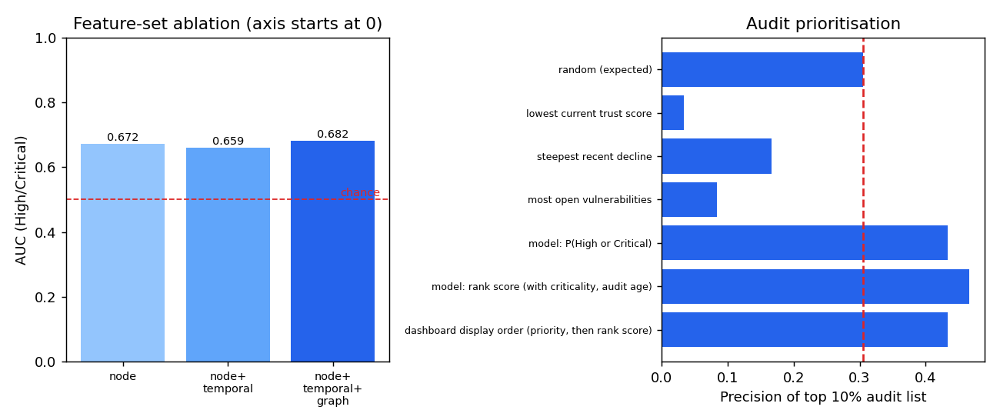

What it is
A runnable prototype of a patent application on predicting information-system trust decay (Indian application 202641108535): audit events become a temporal knowledge graph, the graph yields trust features, a Random Forest forecasts each asset’s trust decay, and an explainable audit list ranks which assets to look at first. A web dashboard and a JSON API sit on top.
Everything runs on a simulated enterprise: 48 assets over 64 daily windows, about 19,000 events. The results describe how predictable this simulator is, not real organisations.
What was measured
Chronological split by window, with purged windows at each boundary so no training label reaches a later split’s inputs. The 5-day horizon was chosen on validation only.
As a classifier, it is weak
- Accuracy 0.477, below the 0.526 majority-class baseline; macro-F1 0.290.
- AUC for High or Critical decay 0.682 (rolling-origin cross-validation 0.705 ± 0.045).
- Recall for the Moderate class is 3%. The README says plainly not to present the category as accurate.
Where it helps: ranking assets for audit
Audit the top 10% (5 assets) each day; the share that truly showed High or Critical decay:
| Ranking | Precision@5 |
|---|---|
| Random (expected) | 0.306 |
| Lowest current trust first | 0.033 |
| Most open vulnerabilities first | 0.083 |
| Steepest recent decline first | 0.167 |
| Model P(High or Critical) | 0.433 |
| Model rank score (adds criticality, audit age) | 0.467 |
| Dashboard order (priority floors, then rank score) | 0.433 |

The model lists beat chance and the naive rankers. The dashboard order’s interval includes chance, so that one is unproven.
Design choices that matter
- No look-ahead. The vector for window t uses only events up to t, tested by rebuilding the graph truncated at t and comparing. Labels come from window t+h.
- Honest selection. Horizon and hyperparameters are chosen on validation. The deployed model is fitted on train plus validation only.
- Every window is labelled as train, validation, test or live on the dashboard, since in-sample windows look much better than new data.
- Two views of “why”. Observed penalties come straight from the rubric (evidence). The model attribution shows what the prediction reacts to, which is not proof of cause.
- A control check. A label that is not forward-looking (the change over the past window) is reproduced at 99.0% accuracy. High accuracy is easy when the label is computed from data the model sees, and means little unless the label is in the future.